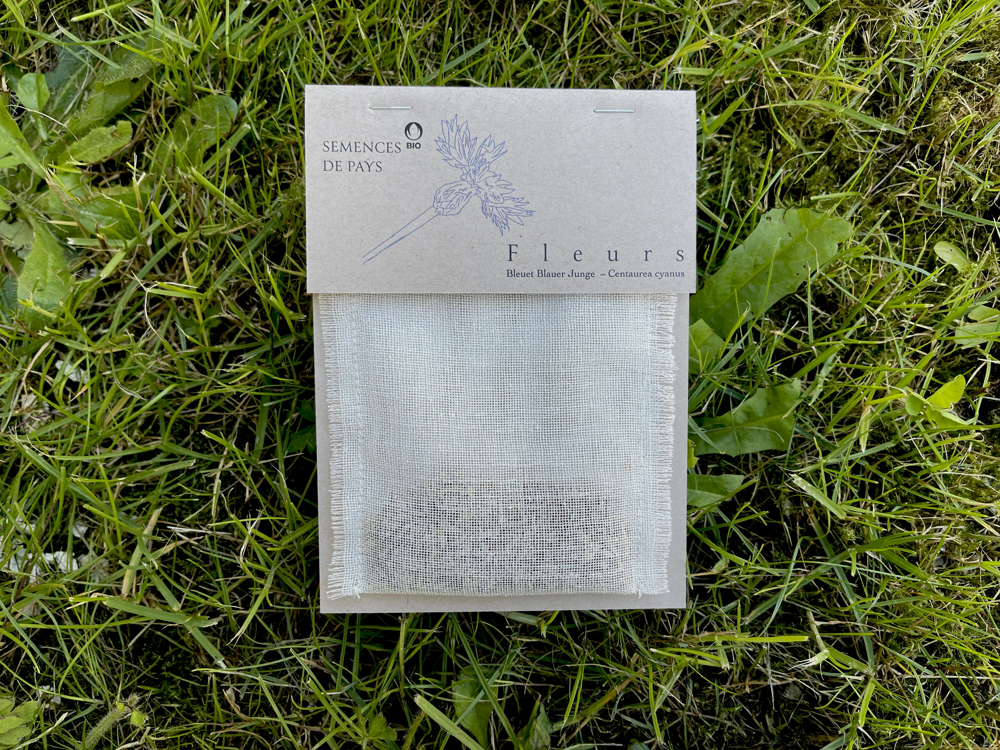
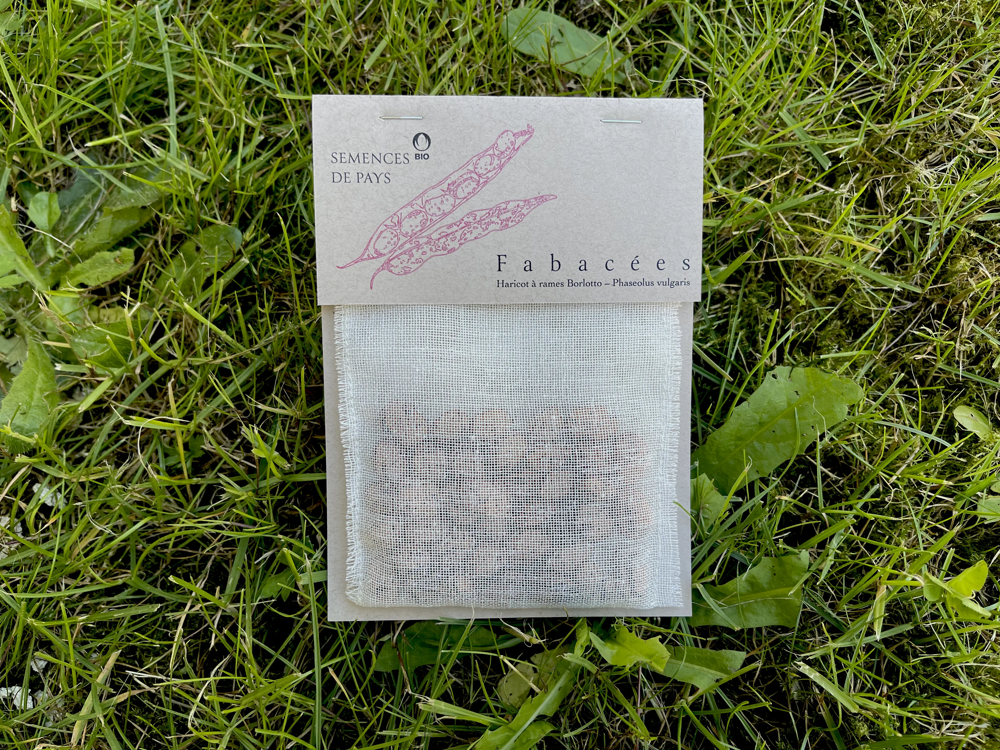
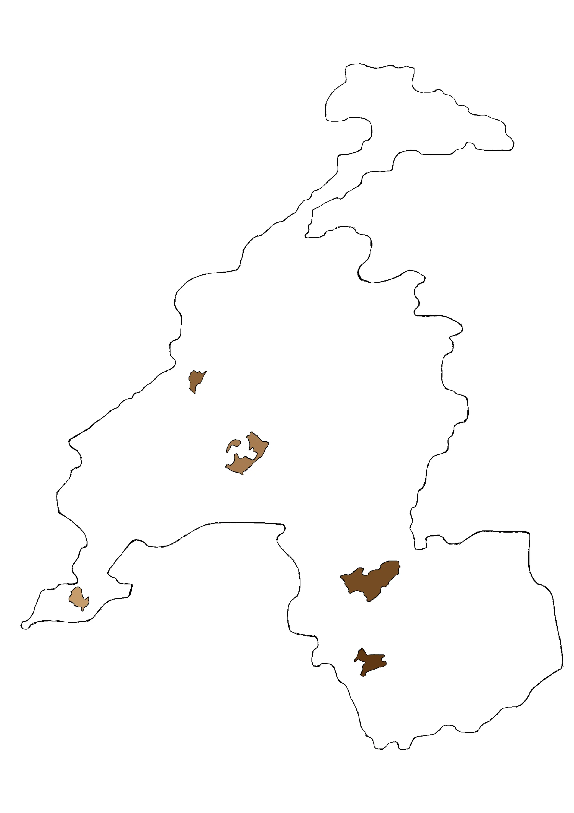

Semences de pays
Semences de pays développe une production de semences reproductibles, rustiques et adaptées à une agriculture biologique proche des cycles de la nature, en collaboration avec les initiatives nourricières de proximité.


Nos semences
Cucurbitacées
Potimarron français
Cucurbita maxima
Potimarron orange en forme de toupie au caractéristique goût de châtaigne. Le plus ancien potimarron débarqué sur le continent.

Fleurs
Bleuet Blauer Junge
Centaurea cyanus

Les délicats pétales de cette magnifique fleur des champs s'emploient pour embellir vos salades d'été et, séchés, dans des mélanges de tisanes.
Fabacées
Haricot à rames Borlotto
Phaseolus vulgaris

Cette variété traditionnelle italienne de haricots à écosser aux gousses zébrées de rouge donne une belle récolte de graines de plusieurs couleurs.
Découvrez nos trésors de biodiversité sur le shop!
Points de vente

Chez Mamie
Rue des Rois 17
1204 Genève
Le Topinambour
Avenue William-Fraisse 9
1006 Lausanne
Ferme du Joran
Chemin des Philosophes 15
1350 Orbe
Le Grainier :
Route des Mines de Sel
1880 Bex
Nouvelle Terre :
Rue du Grand-Verger 12
1920 Martigny